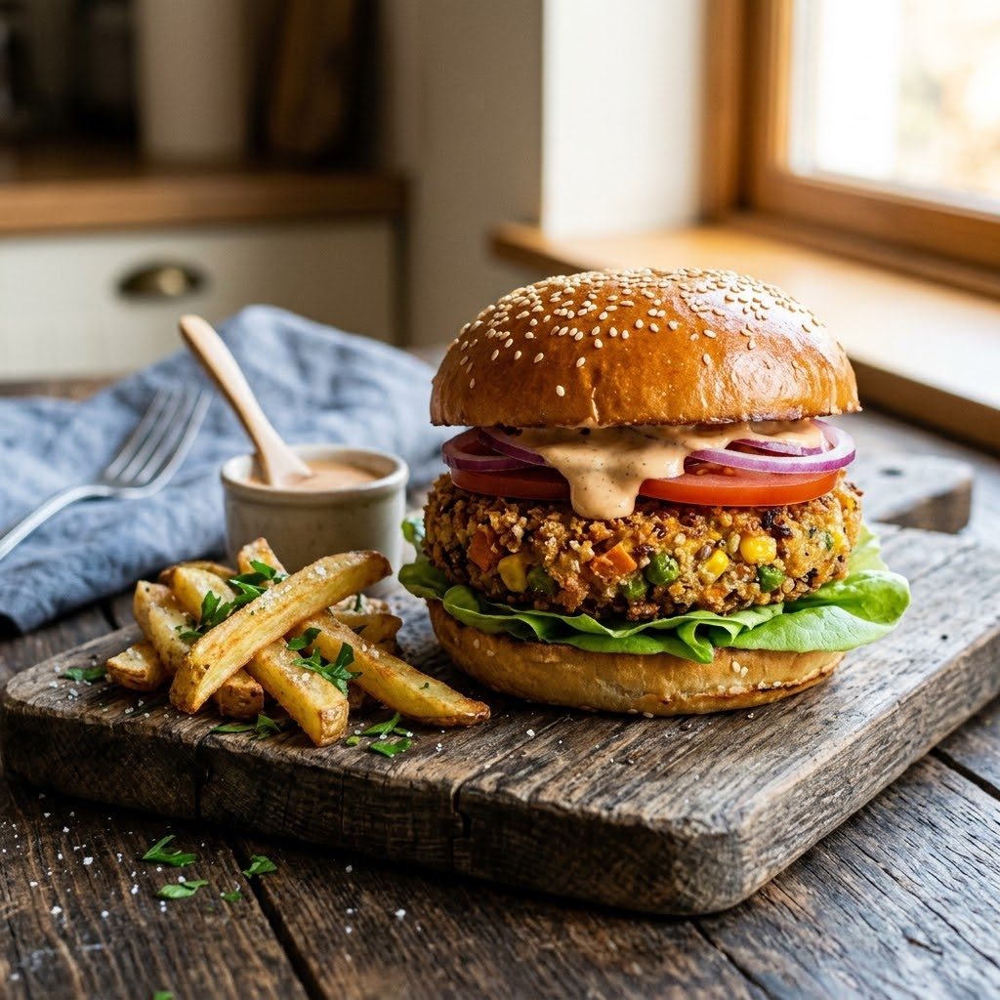

Airfryer – Bake 200°C 16 min — Serves 4
Prep ahead: Chill the shaped patties in the fridge for at least 20 minutes before air-frying — this is what keeps them from falling apart.
Ingredients
Method
Tip: If the mixture feels too soft to shape, add a little extra breadcrumbs rather than more cornflour — it keeps the patty light instead of dense.